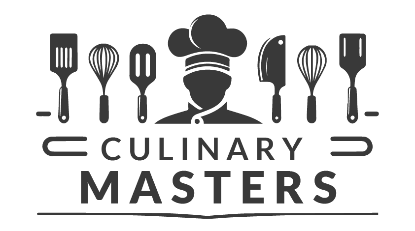

Este año, el evento culinario más esperado cuenta con más participantes que nunca, desde chefs amateur hasta profesionales galardonados, la competencia promete ser emocionante y feroz.
Con una diversidad que va desde entusiastas de la cocina en casa hasta chefs con estrellas Michelin, el concurso de este año promete desafíos sin precedentes y una competencia intensa. La variedad de talentos y la creatividad culinaria que se reunirán en este evento hacen prever una batalla épica por el título de campeón, con cada participante trayendo algo único a la mesa.
Exploramos algunos de los contendientes más prometedores y sus platos estrella en esta edición del concurso. Entre ellos se encuentran innovadores culinarios que han transformado ingredientes simples en experiencias gastronómicas extraordinarias. Estos chefs no solo compiten por el título, sino también por la oportunidad de destacar su visión única y su excepcional habilidad para combinar sabores de maneras que desafían las expectativas tradicionales.
-
Chef Marta Robles:
Conocida por su innovadora fusión de cocina tradicional española con técnicas modernas, promete deslumbrar al jurado con su paella de mariscos al safrán.
-
Chef Luca Moretti:
Especialista en cocina italiana, Luca planea sorprender con su risotto de trufas negras, un plato que ha perfeccionado durante años en su restaurante en Milán.
-
Chef Amina Zahra:
Su enfoque en la cocina marroquí moderna y su célebre cuscús con cordero han ganado múltiples premios internacionales.
A medida que nos acercamos al gran día, la expectativa en el ambiente es palpable. Tanto los participantes como los espectadores están llenos de anticipación, preguntándose quién se llevará la corona este año. Con todas las preparaciones en su lugar y los jueces listos para ser impresionados, estamos a la espera de un evento que será recordado por su excepcional demostración de habilidades culinarias.
"En la cocina, cada ingrediente cuenta, cada sabor tiene su momento y cada plato cuenta una historia. Este concurso no solo desafía a los chefs a superar sus límites, sino que celebra la rica diversidad y la creatividad sin fin que la cocina puede ofrecer." - Chef Gourmet
¡No te pierdas la oportunidad de ver a los mejores talentos culinarios en acción! Este evento es una vitrina espectacular de habilidades, creatividad y pasión por la cocina. Más que un concurso, es una celebración de la diversidad culinaria y una demostración de cómo la comida puede ser un arte que une a las personas. Ven y experimenta el despliegue de sabores y técnicas que solo se ven una vez al año en este escenario magnífico.